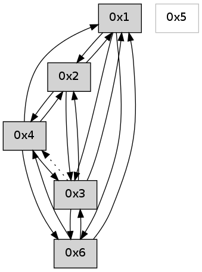

>> << IDX [start] -100 -25 -5 +0 +5 +25 +100 [580.345157146]
 Previous packets
575.006749 [Hello(1): seq=274 sym=2,6,3,4 sysInfo= stat=2:1,0,0,0/6:1,0,0,0/3:1,0,0,0/4:1,0,0,0]
----------------------------------------------------------------------
575.424065 beacon01(adaf) #0 coord=01,02,05,03,04,06 cycle=432.0ms assoc
-- color-indic=0 64 e8 16
575.434027 beacon02(adaf) #0 coord=01,02,05,03,04,06 cycle=432.0ms assoc 64 b9 e9
575.444025 beacon05(adaf) #0 coord=01,02,05,03,04,06 cycle=432.0ms assoc 64 1f c3
575.454029 beacon03(adaf) #0 coord=01,02,05,03,04,06 cycle=432.0ms assoc 64 83 e7
575.464028 beacon04(adaf) #0 coord=01,02,05,03,04,06 cycle=432.0ms assoc 64 25 cd
575.474029 beacon06(adaf) #0 coord=01,02,05,03,04,06 cycle=432.0ms assoc 64 51 d1
575.485723 [Hello(2): seq=870 sym=6,4,1,3 sysInfo= stat=6:0,0,0,0/4:0,0,0,0/1:8,0,0,0/3:12,0,0,0]
----------------------------------------------------------------------
575.916175 beacon01(adaf) #0 coord=01,02,05,03,04,06 cycle=432.0ms assoc
-- color-indic=0 64 a4 a6
575.926137 beacon02(adaf) #0 coord=01,02,05,03,04,06 cycle=432.0ms assoc 64 f5 59
575.936137 beacon05(adaf) #0 coord=01,02,05,03,04,06 cycle=432.0ms assoc 64 53 73
575.946136 beacon03(adaf) #0 coord=01,02,05,03,04,06 cycle=432.0ms assoc 64 cf 57
575.956137 beacon04(adaf) #0 coord=01,02,05,03,04,06 cycle=432.0ms assoc 64 69 7d
575.966139 beacon06(adaf) #0 coord=01,02,05,03,04,06 cycle=432.0ms assoc 64 1d 61
575.977796 [Hello(4): seq=376 sym=6,1,2 sysInfo= stat=6:0,0,0,0/1:8,0,0,0/2:4,0,0,0]
575.981505 [Hello(3): seq=375 sym=2,1,6 asym=4 sysInfo= stat=2:1,0,0,0/1:9,0,0,0/6:15,0,0,0/4:0,0,0,0]
575.989512 [Hello(1): seq=275 sym=2,6,3,4 sysInfo= stat=2:2,0,0,0/6:1,0,0,0/3:1,0,0,0/4:1,0,0,0]
----------------------------------------------------------------------
576.408285 beacon01(adaf) #0 coord=01,02,05,03,04,06 cycle=432.0ms assoc
-- color-indic=0 64 60 c9
576.418246 beacon02(adaf) #0 coord=01,02,05,03,04,06 cycle=432.0ms assoc 64 31 36
576.428246 beacon05(adaf) #0 coord=01,02,05,03,04,06 cycle=432.0ms assoc 64 97 1c
576.438246 beacon03(adaf) #0 coord=01,02,05,03,04,06 cycle=432.0ms assoc 64 0b 38
576.448248 beacon04(adaf) #0 coord=01,02,05,03,04,06 cycle=432.0ms assoc 64 ad 12
576.458247 beacon06(adaf) #0 coord=01,02,05,03,04,06 cycle=432.0ms assoc 64 d9 0e
576.469892 [Hello(6): seq=291 sym=3,4,1 sysInfo= stat=3:15,0,0,0/4:1,0,0,0/1:1,0,0,0]
576.473603 [Hello(2): seq=871 sym=6,4,1,3 sysInfo= stat=6:0,0,0,0/4:1,0,0,0/1:9,0,0,0/3:13,0,0,0]
----------------------------------------------------------------------
576.900394 beacon01(adaf) #0 coord=01,02,05,03,04,06 cycle=432.0ms assoc
-- color-indic=0 64 18 64
576.910354 beacon02(adaf) #0 coord=01,02,05,03,04,06 cycle=432.0ms assoc 64 49 9b
576.920355 beacon05(adaf) #0 coord=01,02,05,03,04,06 cycle=432.0ms assoc 64 ef b1
576.930354 beacon03(adaf) #0 coord=01,02,05,03,04,06 cycle=432.0ms assoc 64 73 95
576.940355 beacon04(adaf) #0 coord=01,02,05,03,04,06 cycle=432.0ms assoc 64 d5 bf
576.950355 beacon06(adaf) #0 coord=01,02,05,03,04,06 cycle=432.0ms assoc 64 a1 a3
576.962041 [Hello(4): seq=377 sym=6,3,1,2 sysInfo= stat=6:1,0,0,0/3:0,0,0,0/1:9,0,0,0/2:5,0,0,0]
576.969121 [Hello(1): seq=276 sym=2,6,3,4 sysInfo= stat=2:3,0,0,0/6:2,0,0,0/3:1,0,0,0/4:1,0,0,0]
----------------------------------------------------------------------
577.392504 beacon01(adaf) #0 coord=01,02,05,03,04,06 cycle=432.0ms assoc
-- color-indic=0 64 dc 0b
577.402464 beacon02(adaf) #0 coord=01,02,05,03,04,06 cycle=432.0ms assoc 64 8d f4
577.412466 beacon05(adaf) #0 coord=01,02,05,03,04,06 cycle=432.0ms assoc 64 2b de
577.422465 beacon03(adaf) #0 coord=01,02,05,03,04,06 cycle=432.0ms assoc 64 b7 fa
577.432467 beacon04(adaf) #0 coord=01,02,05,03,04,06 cycle=432.0ms assoc 64 11 d0
577.442465 beacon06(adaf) #0 coord=01,02,05,03,04,06 cycle=432.0ms assoc 64 65 cc
577.454146 [Hello(2): seq=872 sym=6,4,1,3 sysInfo= stat=6:0,0,0,0/4:1,0,0,0/1:10,0,0,0/3:13,0,0,0]
----------------------------------------------------------------------
577.884614 beacon01(adaf) #0 coord=01,02,05,03,04,06 cycle=432.0ms assoc
-- color-indic=0 64 90 bb
577.894578 beacon02(adaf) #0 coord=01,02,05,03,04,06 cycle=432.0ms assoc 64 c1 44
577.904575 beacon05(adaf) #0 coord=01,02,05,03,04,06 cycle=432.0ms assoc 64 67 6e
577.914576 beacon03(adaf) #0 coord=01,02,05,03,04,06 cycle=432.0ms assoc 64 fb 4a
577.924575 beacon04(adaf) #0 coord=01,02,05,03,04,06 cycle=432.0ms assoc 64 5d 60
577.934578 beacon06(adaf) #0 coord=01,02,05,03,04,06 cycle=432.0ms assoc 64 29 7c
577.946269 [Hello(4): seq=378 sym=6,3,1,2 sysInfo= stat=6:1,0,0,0/3:0,0,0,0/1:10,0,0,0/2:6,0,0,0]
----------------------------------------------------------------------
578.376722 beacon01(adaf) #0 coord=01,02,05,03,04,06 cycle=432.0ms assoc
-- color-indic=0 64 54 d4
578.386684 beacon02(adaf) #0 coord=01,02,05,03,04,06 cycle=432.0ms assoc 64 05 2b
578.396683 beacon05(adaf) #0 coord=01,02,05,03,04,06 cycle=432.0ms assoc 64 a3 01
578.406683 beacon03(adaf) #0 coord=01,02,05,03,04,06 cycle=432.0ms assoc 64 3f 25
578.416683 beacon04(adaf) #0 coord=01,02,05,03,04,06 cycle=432.0ms assoc 64 99 0f
578.426687 beacon06(adaf) #0 coord=01,02,05,03,04,06 cycle=432.0ms assoc 64 ed 13
578.438391 [Hello(2): seq=873 sym=4,1,3 sysInfo= stat=4:1,0,0,0/1:10,0,0,0/3:13,0,0,0]
----------------------------------------------------------------------
578.868834 beacon01(adaf) #0 coord=01,02,05,03,04,06 cycle=432.0ms assoc
-- color-indic=0 64 19 d3
578.878794 beacon02(adaf) #0 coord=01,02,05,03,04,06 cycle=432.0ms assoc 64 48 2c
578.888795 beacon05(adaf) #0 coord=01,02,05,03,04,06 cycle=432.0ms assoc 64 ee 06
578.898795 beacon03(adaf) #0 coord=01,02,05,03,04,06 cycle=432.0ms assoc 64 72 22
578.908794 beacon04(adaf) #0 coord=01,02,05,03,04,06 cycle=432.0ms assoc 64 d4 08
578.918795 beacon06(adaf) #0 coord=01,02,05,03,04,06 cycle=432.0ms assoc 64 a0 14
578.930480 [Hello(4): seq=379 sym=6,3,1,2 sysInfo= stat=6:1,0,0,0/3:0,0,0,0/1:10,0,0,0/2:7,0,0,0]
578.936452 [Hello(1): seq=278 sym=2,6,3,4 sysInfo= stat=2:5,0,0,0/6:2,0,0,0/3:1,0,0,0/4:1,0,0,0]
----------------------------------------------------------------------
579.360942 beacon01(adaf) #0 coord=01,02,05,03,04,06 cycle=432.0ms assoc
-- color-indic=0 64 dd bc
579.370903 beacon02(adaf) #0 coord=01,02,05,03,04,06 cycle=432.0ms assoc 64 8c 43
579.380903 beacon05(adaf) #0 coord=01,02,05,03,04,06 cycle=432.0ms assoc 64 2a 69
579.390903 beacon03(adaf) #0 coord=01,02,05,03,04,06 cycle=432.0ms assoc 64 b6 4d
579.400905 beacon04(adaf) #0 coord=01,02,05,03,04,06 cycle=432.0ms assoc 64 10 67
579.410904 beacon06(adaf) #0 coord=01,02,05,03,04,06 cycle=432.0ms assoc 64 64 7b
579.422586 [Hello(2): seq=874 sym=4,1,3 sysInfo= stat=4:1,0,0,0/1:11,0,0,0/3:14,0,0,0]
----------------------------------------------------------------------
579.853050 beacon01(adaf) #0 coord=01,02,05,03,04,06 cycle=432.0ms assoc
-- color-indic=0 64 91 0c
579.863011 beacon02(adaf) #0 coord=01,02,05,03,04,06 cycle=432.0ms assoc 64 c0 f3
579.873011 beacon05(adaf) #0 coord=01,02,05,03,04,06 cycle=432.0ms assoc 64 66 d9
579.883011 beacon03(adaf) #0 coord=01,02,05,03,04,06 cycle=432.0ms assoc 64 fa fd
579.893011 beacon04(adaf) #0 coord=01,02,05,03,04,06 cycle=432.0ms assoc 64 5c d7
579.903011 beacon06(adaf) #0 coord=01,02,05,03,04,06 cycle=432.0ms assoc 64 28 cb
579.914692 [Hello(4): seq=380 sym=6,3,1,2 sysInfo= stat=6:1,0,0,0/3:0,0,0,0/1:11,0,0,0/2:8,0,0,0]
579.919716 [Hello(1): seq=279 sym=2,6,3 sysInfo= stat=2:6,0,0,0/6:2,0,0,0/3:1,0,0,0]